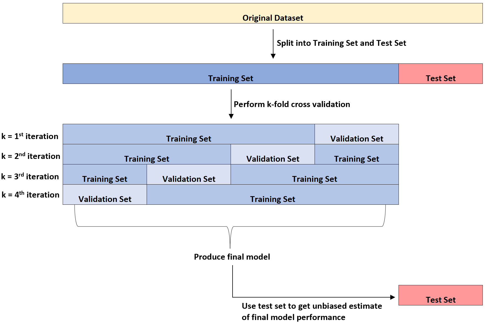

Data Splitting
Data Splitting in Machine Learning
Data splitting (e.g., dividing data into training, validation, and test samples) is crucial because it protects us from fooling ourselves about how well a model actually performs.
Training Sample
The subset of examples used to train the learning algorithm. Here we typically estimate the model’s parameters in the training sample.
For example, if we have data from 150 participants, we might keep data from 100 participants (with known depression scores) to train a predictive model.
Notes: Spending too much in training won’t allow us to get a good assessment of predictive performance. We may find a model that fits the training data very well, but is not generalizable (overfitting).
Validation Sample
Samples used to tune algorithm hyperparameters (e.g., regularization strength, number of neurons in a network).
For example, from our 100 individuals in the training sample, we may split the training data into 4 groups of 25 participants. Each of these will be a validation sample, and allow us to select the optimal model settings or tuning parameters before our final evaluation.
Test Sample
The test Sample used to evaluate model performance, separate from training and validation. The test sample is not made available in the learning stage. Sometimes too much spent in testing won’t allow us to get a good assessment of model parameters.
For example, for those 50 participants we never looked out may be our test data. The model can now be used to predict depression scores ; predicted scores for the individuals in the test sample. Here we can now compare actual scores to assess accuracy.

(Hyper)parameters in the Context of Data Splitting
In our discussion of the training and validation samples we introduce the idea of parameters and hyperparameters. The distinction between these terms can often can trip people up, so it’s worth explaining the difference.
Parameters vs. Hyperparameters
Parameters are values learned automatically (or estimated) from the training data. The model parameters are often the thing we are interested in estimating in a given algorithm.
For example. the slope of the line in a simple linear regression prediction problem relating amount of treatment (feature) to depression score (target).
Hyperparameters are set before training begins, and control how the learning process works. The selection of hyperparameters is often critical to model performance, as in procedures like k-folds cross-validation, playing a critical role in how the model generalizes.
For example, the the number of clusters used to partition the data
Role of Parameters in Data Splitting
When we split data, each portion plays a distinct role:
Training set → Fit the model parameters.
Validation set → Used to compare different hyperparameter choices.
Test set → Used only once, at the very end, to estimate generalization performance.
Important note: Hyperparameters should be tuned using the validation set, not the test set. If we adjust hyperparameters based on the test set, we are indirectly training on it and lose the ability to measure real-world performance.
Example: k-Means Clustering
Parameters (learned from the data)
- Cluster centroids: the coordinates of the cluster centers.
- These are calculated by the algorithm during training and adjusted iteratively until convergence.
- You do not set them manually — the algorithm figures them out.
Hyperparameters (set before training)
- Number of clusters (k): chosen by the user before running the algorithm.
- Initialization method (e.g., random, k-means++).
- Maximum number of iterations allowed.
- These control how the algorithm runs, but are not learned from the data itself.
Benefits of Data Splitting in ML
Prevents Overfitting to the Training Data
- When a model is trained, it adapts to patterns in the training set.
- If we only check performance on that same data, we might think the model is excellent — but it may just be memorizing instead of generalizing.
- A separate test set lets us see how the model behaves on new, unseen data.
Simulates Real-World Performance
- In real life, the model will be applied to data it hasn’t seen before.
- By holding out a test set, we simulate that scenario, giving us a better sense of expected performance in practice.
Helps with Model Selection & Tuning
- A validation set (or cross-validation) is used to choose hyperparameters (like tree depth, learning rate, regularization strength).
- If we tuned on the test set, we’d essentially be “leaking” information, and performance estimates would be biased upward.
- Proper splitting ensures that the test set remains untouched until the very end.
Detects Data Leakage
- Sometimes information from the future or from labels sneaks into the features.
- If this happens, the model might look perfect on the training set but fail on a clean split.
- Data splitting may not actually help data leakage though. When might it help and when might it not?
Provides a Fair Benchmark
- In research and industry, different models need to be compared on a common, untouched test set.
- Without splitting, comparisons aren’t meaningful, since each model might overfit differently.
Data Splitting in Real Life
In groups of 3–4, discuss:
Imagine a real-world scenario that involves learning and evaluation. This can be interpreted loosely, if necessary. Describe the different aspects of the learning and assessment process and how they might corresponds to training, validation, and test sets in the context of machine learning? Why?”
K-Folds Cross-Validation
So, what does all this data splitting mean for us in practice? Let’s take a look at one of the more popular data-splitting methods used in practice: K-Folds Cross-Validation
Motivation for Cross-Validation
When talking about data-splitting we discussed training, validation and test sets. For a moment, let’s take a closer look at the training and validation sets to get a clear idea of what is happening.
Let’s split our available data into two parts:
- Training Set: which the model learns from
- Validation Set: used to check how well the model performs on data it hasn’t seen before
This method is simple and useful. It gives us an early warning if our model is overfitting. However, relying on a single holdout split comes with a big drawback: the result can be very unstable.
This idea motivates a better solution: cross-validation, where we avoid putting all our faith in just one split of the data. Instead, we systematically rotate through multiple splits, averaging the results to get a more stable and reliable estimate of model performance.
K-Folds
One idea is to break up our data into a number of training and validation sets as the image below shows. We can then average the performance across the k folds to get a more stable estimate of the model performance.

K-Folds Cross-Validation in Steps
Sometimes it is helpful to write out the steps of a procedure like this explicitly.
Step 1: Split the data into k folds
- Shuffle the dataset randomly.
- Divide it into k roughly equal-sized parts, called folds.
- For example, if k =10, we have 10-fold cross-validation, and split the data into 10 parts.
Step 2: Train and validate across folds
For each fold i from 1 to k:
1. Use fold i as the validation set.
2. Use the remaining k – 1 folds as the training set.
3. Train the model on the training set.
4. Evaluate its performance on the validation set.
At the end, we will have k performance scores (one per fold).
Step 3: Average the performance
- Compute the average performance across all k folds.
- This gives a more reliable estimate of how well the model generalizes than using a single holdout split.
Step 4: Hyperparameter tuning
To tune hyperparameters using cross-validation:
1. Define a grid of candidate hyperparameter values.
2. For each candidate:
- Repeat steps 2-3.
3. Select the hyperparameter value with the best average performance.
Step 5: Retrain on the full training set
- Once the best hyperparameter is chosen, retrain the model on the entire training dataset (not just folds).
- This ensures the model learns from all available data.
Step 6: Evaluate on the holdout test set (if available)
- If you set aside a test set at the very beginning, now is the time to use it.
- This gives an unbiased estimate of how the tuned model will perform on brand-new data.